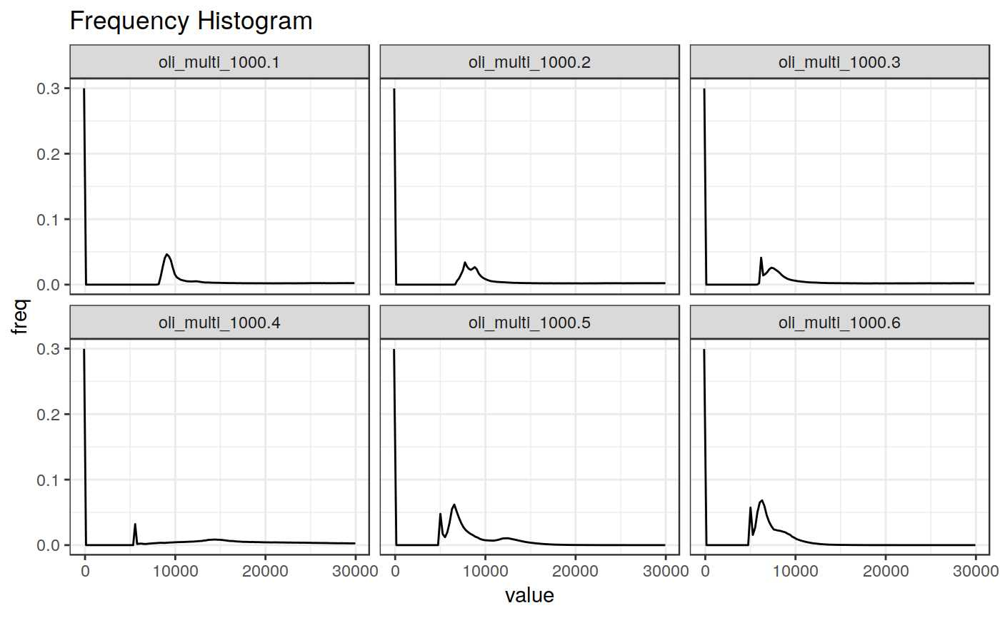

Function used quickly retrieve statistics (min, max, mean, median sd, and eventually quantiles) for bands of a raster object
get_raststats(in_rast, quantiles = FALSE, hist = FALSE, verbose = TRUE)
| in_rast | a |
|---|---|
| quantiles |
|
| hist |
|
| verbose | if FALSE suppress messages, Default: TRUE |
a list containing the following elements:
stats: data.frame containing min, max, average and standard deviation
for each band (see examples);
quants: data.frame containing the quantiles of the distribution
of raster values, for each band (100 value - 0.01 interval) (NULL is returned
if quants == FALSE (the default));
hists: data.frame containing information about the distribution of
raster values for each band. the data frame includes the limits of each
bin, the count of the number of pixels included in it, the corresponding
frequency and the cumulated frequency at each bin (NULL is returned
if hists == FALSE (the default));
library(ggplot2) in_rast <- system.file("extdata/OLI_test", "oli_multi_1000.tif", package = "sprawl.data") get_raststats(in_rast)#>#> $stats #> min max avg sd band #> 1: 0 57048 14646.024 14498.970 1 #> 2: 0 55558 13907.527 14207.094 2 #> 3: 0 57400 13891.930 14769.282 3 #> 4: 0 55552 15428.359 13687.184 4 #> 5: 0 65535 5995.777 4660.999 5 #> 6: 0 65535 5180.533 3722.452 6 #>get_raststats(in_rast, quantiles = TRUE)#>#> $stats #> min max avg sd band #> 1: 0 57048 14646.024 14498.970 1 #> 2: 0 55558 13907.527 14207.094 2 #> 3: 0 57400 13891.930 14769.282 3 #> 4: 0 55552 15428.359 13687.184 4 #> 5: 0 65535 5995.777 4660.999 5 #> 6: 0 65535 5180.533 3722.452 6 #> #> $quants #> quant val band #> 1: 0.00 -111.859 1 #> 2: 0.01 -111.859 1 #> 3: 0.02 -111.859 1 #> 4: 0.03 -111.859 1 #> 5: 0.04 -111.859 1 #> --- #> 602: 0.96 10665.500 6 #> 603: 0.97 10922.500 6 #> 604: 0.98 11693.500 6 #> 605: 0.99 12721.500 6 #> 606: 1.00 65406.500 6 #>get_raststats(in_rast, hist = TRUE, quantiles = TRUE)#>#> $stats #> min max avg sd band #> 1: 0 57048 14646.024 14498.970 1 #> 2: 0 55558 13907.527 14207.094 2 #> 3: 0 57400 13891.930 14769.282 3 #> 4: 0 55552 15428.359 13687.184 4 #> 5: 0 65535 5995.777 4660.999 5 #> 6: 0 65535 5180.533 3722.452 6 #> #> $quants #> quant val band #> 1: 0.00 -111.859 1 #> 2: 0.01 -111.859 1 #> 3: 0.02 -111.859 1 #> 4: 0.03 -111.859 1 #> 5: 0.04 -111.859 1 #> --- #> 602: 0.96 10665.500 6 #> 603: 0.97 10922.500 6 #> 604: 0.98 11693.500 6 #> 605: 0.99 12721.500 6 #> 606: 1.00 65406.500 6 #> #> $hists #> value count freq cumfreq band #> 1: -111.8590 291848 2.999034e-01 0.2999034 1 #> 2: 111.8588 0 0.000000e+00 0.2999034 1 #> 3: 335.5766 0 0.000000e+00 0.2999034 1 #> 4: 559.2944 0 0.000000e+00 0.2999034 1 #> 5: 783.0122 0 0.000000e+00 0.2999034 1 #> --- #> 1532: 64378.5000 0 0.000000e+00 0.9999990 6 #> 1533: 64635.5000 0 0.000000e+00 0.9999990 6 #> 1534: 64892.5000 0 0.000000e+00 0.9999990 6 #> 1535: 65149.5000 0 0.000000e+00 0.9999990 6 #> 1536: 65406.5000 1 1.027601e-06 1.0000000 6 #>#>#>#>#> Warning: Removed 138 rows containing missing values (geom_path).